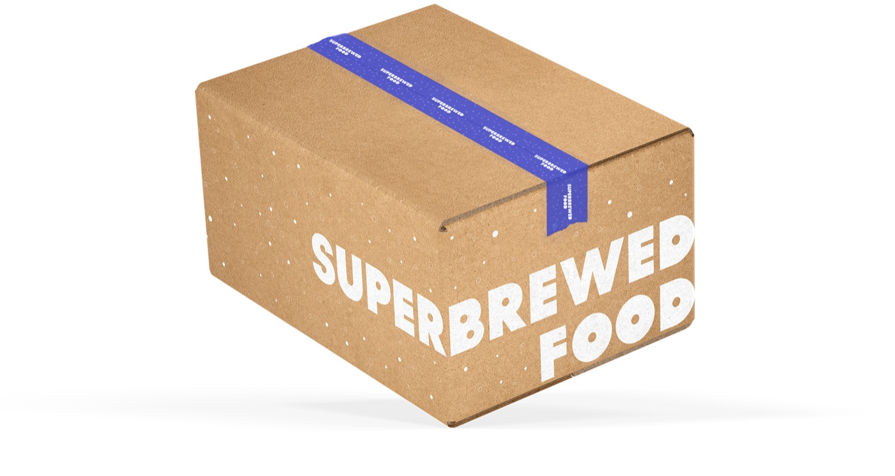
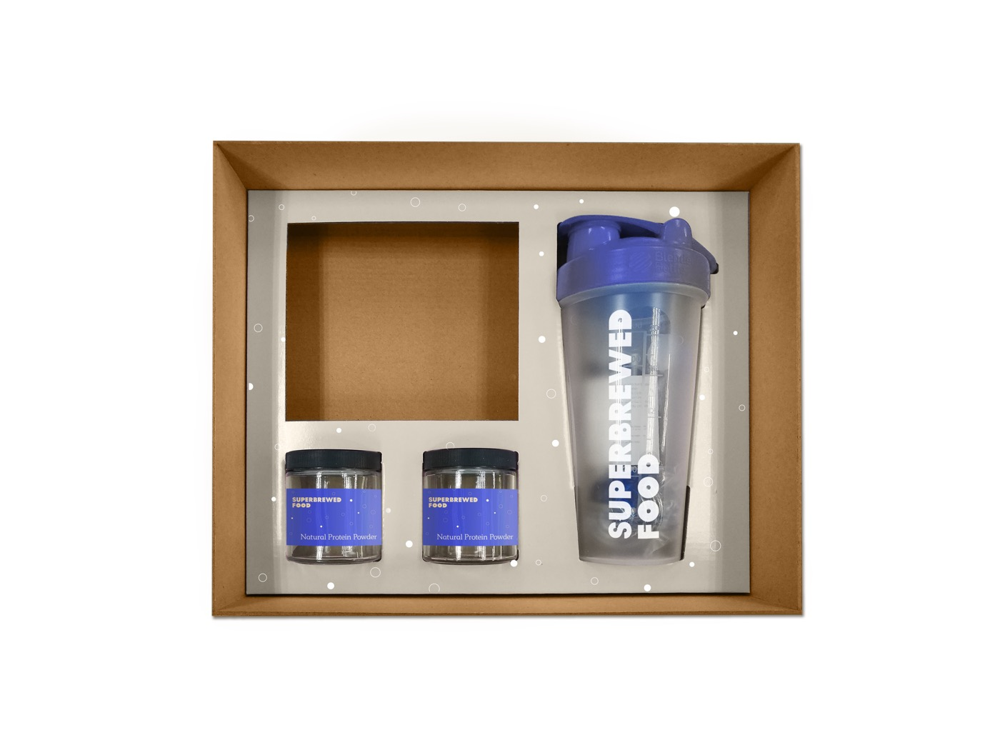
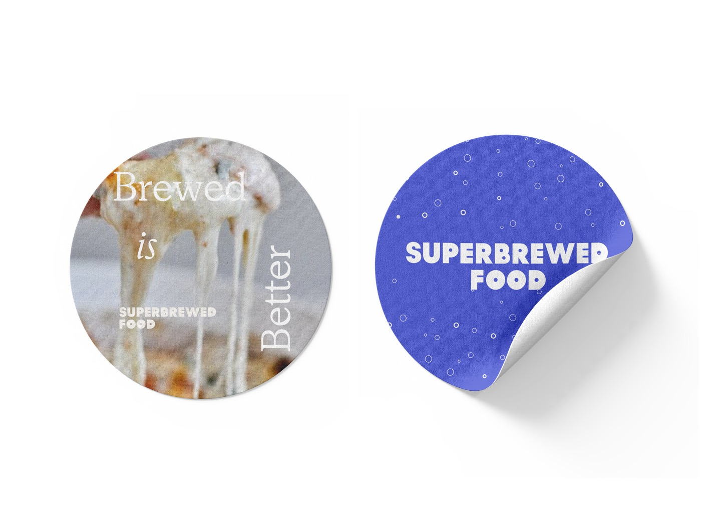
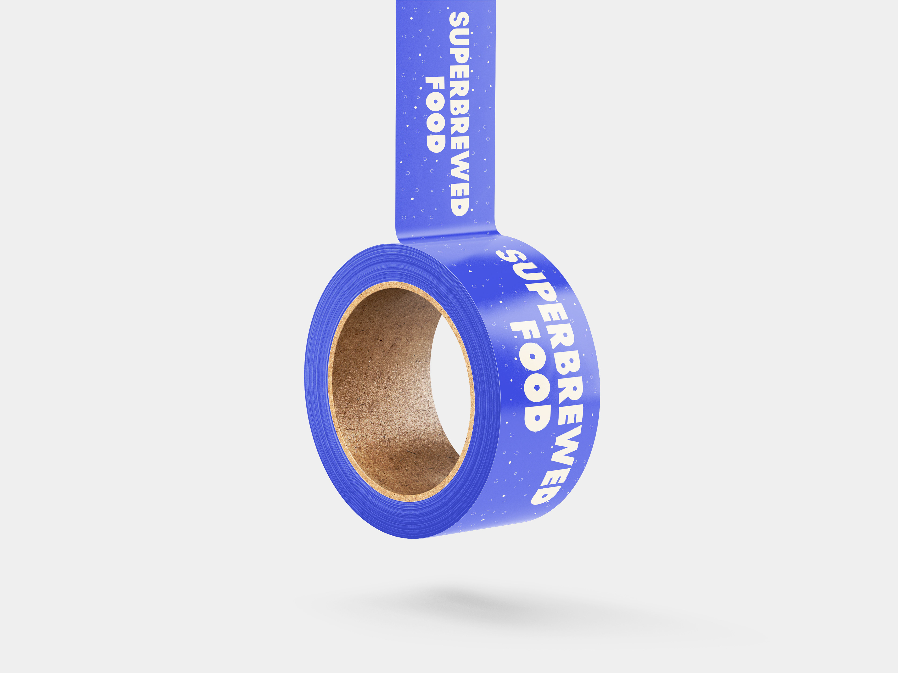
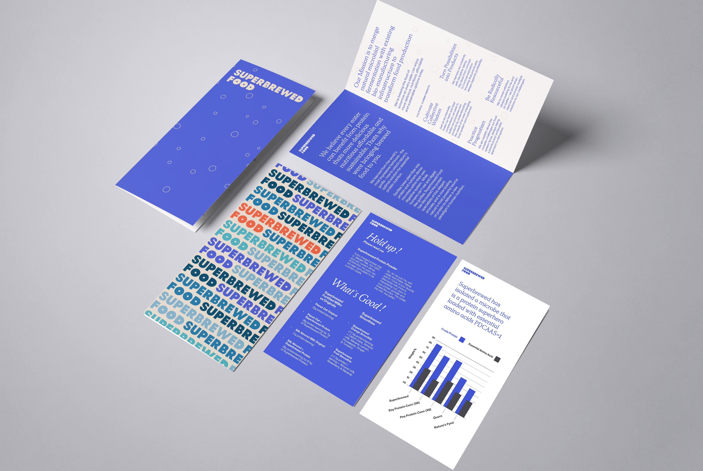

Packaging
Among the first print applications of a newly created identity for Superbrewed Food, a biotech company producing post-fermentation protein. The work gave the brand its first physical form — translating a nascent system into a tangible object.




